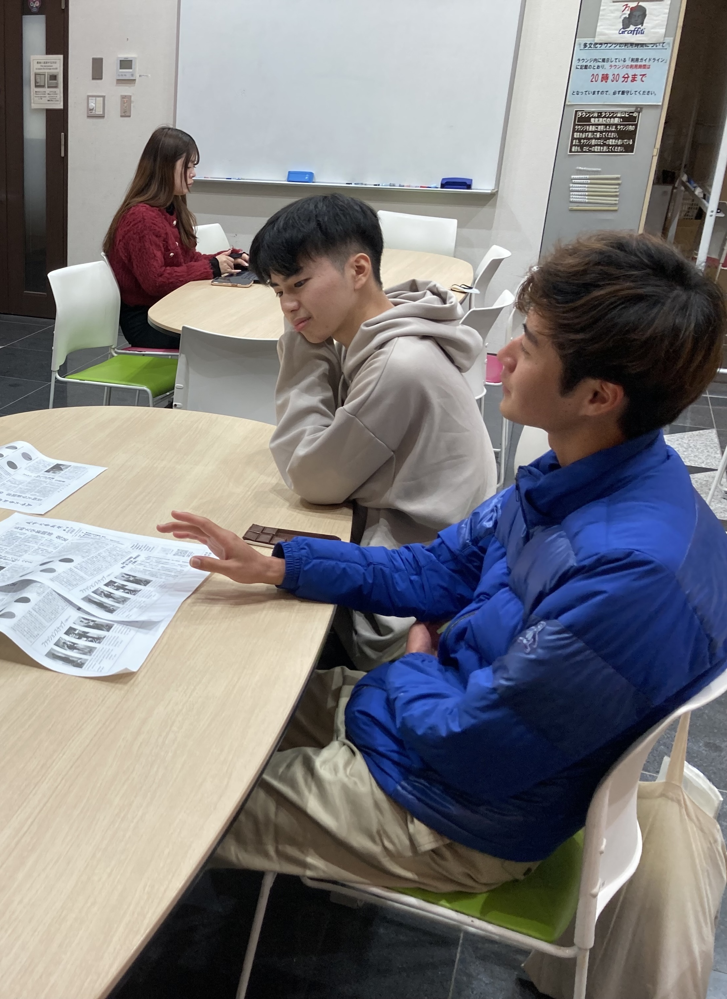
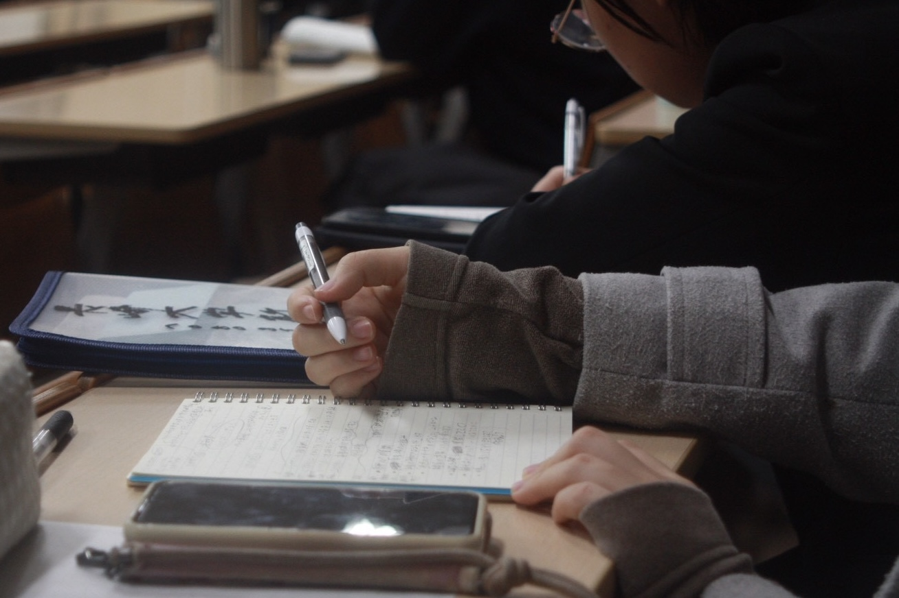
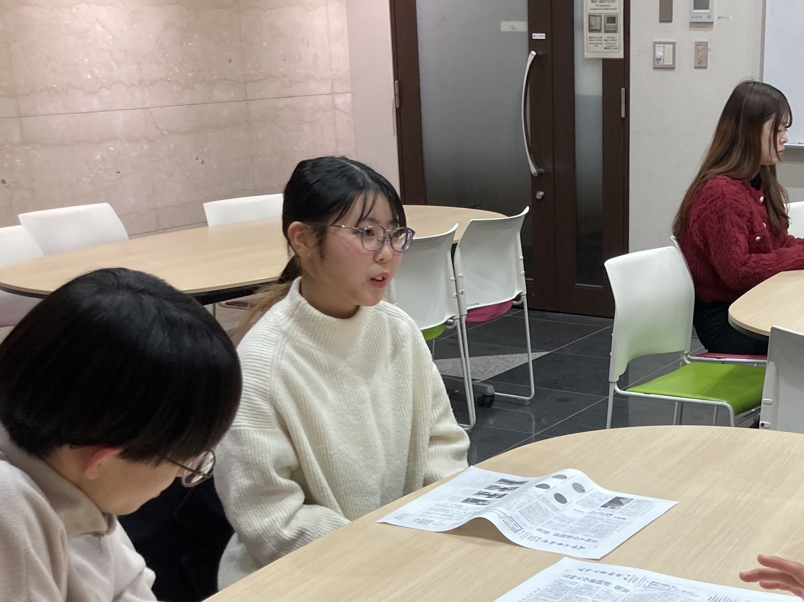

考える、長崎大から
新聞社について
長崎大学新聞社とは
長崎大学新聞社は、長崎大学の学生によって運営される新聞社です。
大学内の出来事や学生生活、研究、進学・就職など、 長崎大学に関するさまざまな情報を取材し、発信しています。
活動内容
大学内外のニュースの取材や記事の執筆、 インタビュー、写真撮影などを行っています。
私たちが目指すこと
学生にとって身近で役立つ情報を届けるとともに、 長崎大学で起きているさまざまな出来事を記録し、 学生や地域の皆さまに発信していくことを目指しています。